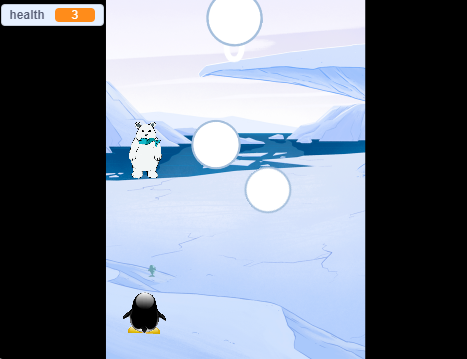
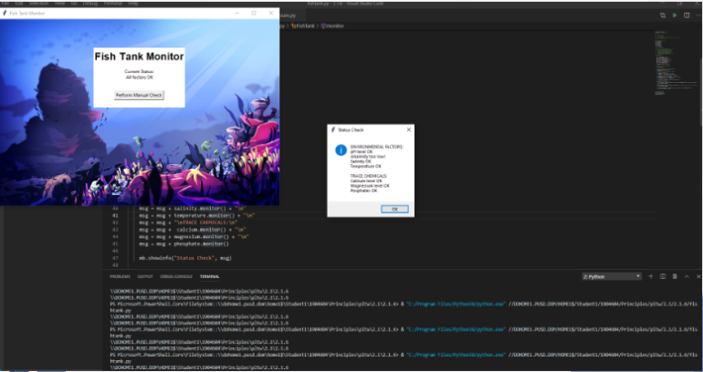
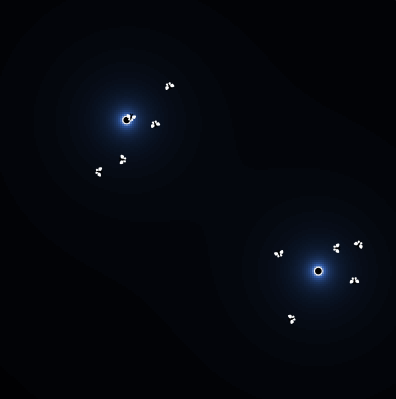
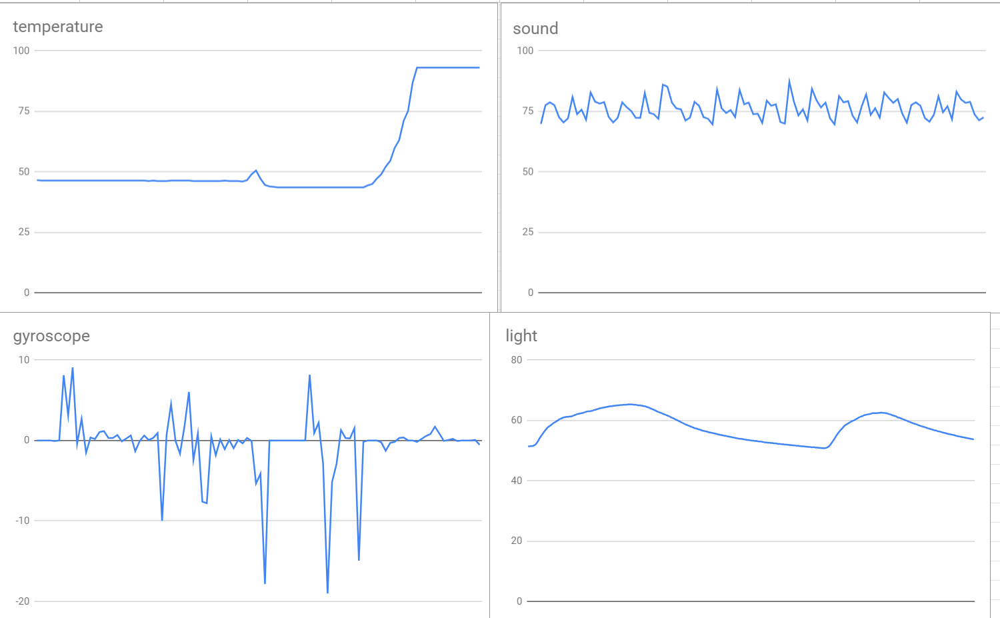

Home
Portfolio
About Me
This is my Portfolio Page!
1.1.9. Sushi Factory Project.
In this game, you get to go through the process of making TWO different types of sushi which are the California Roll and Salmon Roll.
You go through the process by inputting the ingredients such as seaweed and rice, which you can see on the left-hand side of the text describing the process.
At the end of your process, you get to cut the sushi, and both types of sushi are displayed on a plate.
1.2.5. Piano Composer

In this game, you get to pick betweeen two different levels of difficulty: easy or hard. The code checks the user input and prints a list for each one.As the user types the keys,
the note moves along the screen and an image of a star is put on the keyboard. Each letter that is typed is removed from the list and at the end of the program, we check whether the list
is empty meaning that the user got everything correct and congratulate them with a message that states, "Wow! You are a natural!"
Scratch Project: Penguin Avalanche

In this game, you get to play as a penguin. The penguin, which control with your mouse, can throw fish at the snowballs and polar bears for points. These enemies are falling from the sky and you get points for each one destroyed.
You have 3 lives and after the 3 lives are over, there is a game over screen. You lose a life when you make contact with a shark or a snowball. The sharks are thrown from the polar bear and from each you lose one life. To do this,
we made an if loop stating that if the penguin makes contact with any of these, it loses 1 life from its health.
A pHishy Fish Tank

In this project, we havve to debug a piece of code that does not run correctly. For the alkalinity python file, we change the value1 and value 2
variables because the for loop did not run. For the temperature python file, we changed the num_readings variable so it is set to the value of
the temperature. For the magnesium python file, we need to change the index of the list that is called because a non-existent item in the list is called.
At the end of this project, you can check the environmental factors listed above to make sure your fish tank is suitable for tehe fish.
Moth Simulation

This model demonstrates moths flying in circles around a light. Moths are attracted to light and this simulation proves it.
There is no scientific evidence available that explains the true reason for why moths are attracted to light sources, some scientists
say that its due to them mistaking it for the moon. You can change the number of moths, number of lights, luminance, sensitivity,
and turn angle of the moths.
Rover Phone Home

I believe that these graphs show tropical islands. The sounds throughout the day remain low and constant which support the regions:
rocky mountains, tropical island, inland forests. The gyroscope shows constant winds that vary throughout the day,
which supports the regions: tropical islands and desert plains. The temperature quickly rises when the graph approaches daytime,
which supports the regions: desert plains, tropical forests. The light is bright and intense during daytime, supporting tropical islands and others.